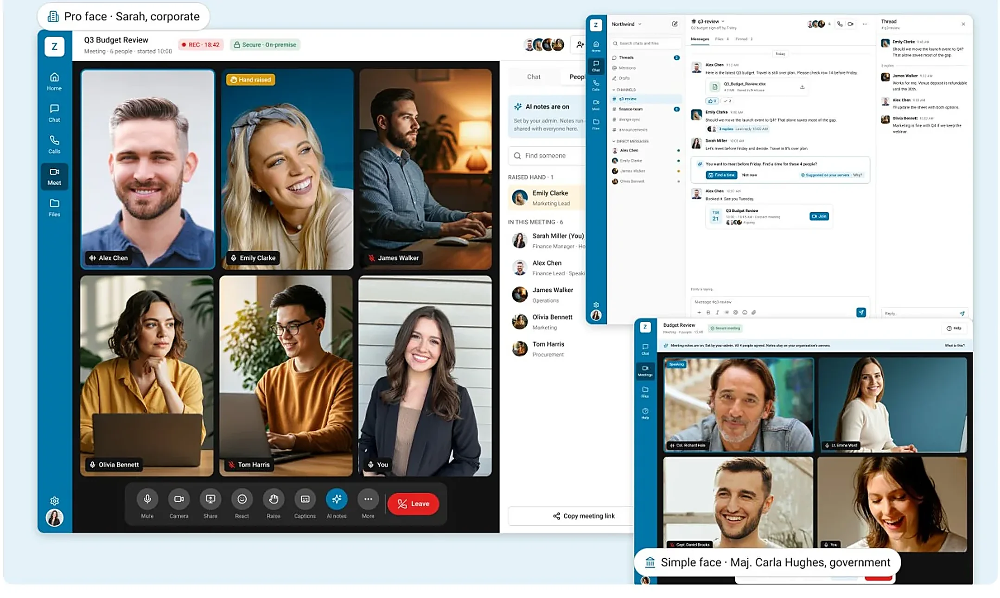

A self-initiated concept for secure chat, meetings and AI inside an on-premise email suite.
Role
Self-initiated. All design decisions were mine.
Type
Concept, not a shipped product
Tools
Claude, Figma MCP, VS Code, Copilot

1 rulenothing leaves the customer's servers
1 coretwo interfaces for two very different users
Codeworking React prototype, designed with AI
Context
This on-premise email suite covers mail, calendar, tasks and files, but it had no chat or meetings of its own. Users asked for a Teams button. It was easy to add and they would have liked it, but it would send our own users to another product every day. So I started this concept on my own. AI helped me to make it, but the decisions were mine.
The problem
Half of the suite was missing
I did not want to add just a button
In research, one need kept coming back: let me create a Teams link in the calendar invite. I kept asking what happens after the button. Each outside tool sends users and data away, and this product is built on keeping data inside.
So I set one rule first: nothing leaves the customer's servers. This includes prompts, files and AI answers.
The main decisions
What I decided, and why
I looked at three options and chose the hardest one
A Teams button sends people away. Connecting any outside tool still depends on someone else. So I chose to explore chat, calls, meetings and AI inside the suite. It meant much more work, with no PM, no budget and no backend.
My first version was an AI platform to beat big suites. But AI needs a product to live in. So I designed chat and meetings first, then added AI on top. I rewrote this idea three times.
I threw away my own two-product idea
I first gave corporate and government users separate products. That meant two codebases to secure, and they would drift apart. One interface would not work for both. So I chose one core with two interfaces, and the admin picks the interface. I lost weeks of screens.
One core reviewed once, for two very different people.
For government users, every feature is about trust
If we ask to confirm everything, people stop reading. If we ask nothing, the security officer will not approve it. So I added more steps when the risk is higher, from no step for viewing to everyone agreeing for AI notes.
My first AI work looked like every AI demo: a home page and a productivity chart. It felt like people were being watched. So I moved AI inside mail, calendar and meetings, where it can help.
One early screen merged budget files by itself. Asking at every step would make people click yes without reading. So AI suggests, and a person confirms once.
The person stays in control, and it does not slow them down.
People cannot check a score, but they can check a reason, like "Alex mentioned you directly, deadline Friday." I made it one label and one component, so every AI feature gets it.
AI output was average, so I rebuilt it
I used AI for research, screens and React code. But the drafts were generic, some screens were repeated and the UI looked average. I removed every claim I could not prove, and rebuilt the key screens by hand.